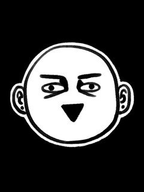
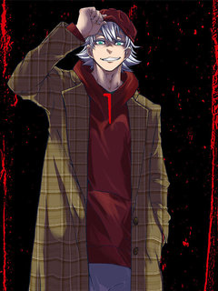
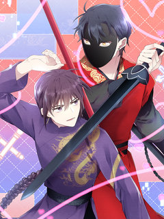
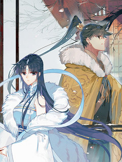
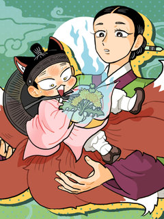

레진코믹스 추천 인기 순위 TOP 30
레진코믹스에서 지금 연재 중인 작품을 레진코믹스 공식 인기 순위 순서로 모았어요. 네이버웹툰·카카오웹툰·레진코믹스에서 조건에 맞는 작품 439개 중 인기 순으로 30개를 골랐어요. 인기 TOP 3: 거북이는 잠자는 토끼를 지나칠 수 없어!, 남고 소년, 불멸의 날들
2026-10-07 기준 · 성인 작품 제외
내 취향으로 더 좁혀서 추천받기 →-
1
 레진코믹스
레진코믹스거북이는 잠자는 토끼를 지나칠 수 없어!
거북이는 토끼와의 달리기 시합에서 승리하고, 10년을 숨겼던 마음을 고백하기로 결심한다! 거북이는 최선을 다해 달리지만 다가올 미래는 참혹 그 자체?!
개그드라마병맛판타지레진코믹스에서 보기 → -
2
 레진코믹스
레진코믹스남고 소년
대문 남고의 유일한 홍일점인 '홍일탁'. 물론 이름과 별명과는 다르게 남자다. 왜소한 체격과 곱상한 외모 덕분에 찐따부터 일진에 이르기까지 자신을 무시하기에 이르고 교내 서열 꼴찌에 머무르고 있었다. 과거, 중학교 2학년까지만 해도 유명한 일진이었던 일탁은 자신의 한 문제로 인해 먹이…
BL개그성장물숏드라마스낵타임레진코믹스에서 보기 → -
3
 레진코믹스
레진코믹스불멸의 날들
오랜 연구 끝에 인류는 더이상 죽지도 다치지도 않게 된다. 하지만 언제나 돌연변이는 존재하는 법. 죽을 수 있는 존재로 태어난 '멸'은 불사의 사람들 사이에서 갖은 고생을 하며 살아간다. 외로이 고군분투를 하며 지내던 때, 멸은 자신과 같은 돌연변이 해결사 '필'을 만나게 된다. 그리…
액션레진코믹스에서 보기 → -
4
 레진코믹스
레진코믹스게임은 살인이다
정체불명의 가상현실 게임 '케이지' 자신과 인연이 있던 스승이자 어린아이인 <요를>을 GM인 유타기의 손에 잃고나서 유타기를 진심으로 죽이기 위한 방법을 찾기 위해 강해질 방법을 찾게 되는데... <내게 게임은 살인이다>의 정식 후속작.
게임소년물SF성장물판타지레진코믹스에서 보기 → -
5

-
6

-
7

레진코믹스주식회사 카미카쿠시
의뢰인을 불의의 사고로 가장하여 없애준다는 회사 [카미카쿠시] 보이스피싱 그룹 조직원 카케이 신타는 사기 치는 일도 제대로 하지 못한 채, 선배에게 이끌려 타겟을 제거해 달라고 [카미카쿠시]에게 의뢰한다. 그러나 의뢰한 회사의 정체는 의외의 고객에게 인재를 소개하는 일이었다!? 현실과…
계약연애스릴러복수극액션레진코믹스에서 보기 → -
8

-
9

레진코믹스사기 결연 신고합니다
가상 현실 MMORPG 부문 국내 1위 게임 <천풍>. 간만의 대규모 업데이트에 설레 점검이 끝나자마자 들어왔는데. ‘어라?’ 누군가 먼저 내 메인 퀘스트를 건드렸다. 던전 입장 제한이 걸린 걸 깨닫자마자 발걸음을 돌렸다. 어떤 놈인진 몰라도, 두 번째부터는 순조롭지 않을 거다. <숨…
까칠수까칠공오해/착각능력수헌신남레진코믹스에서 보기 → -
10
 레진코믹스
레진코믹스사랑은 환상! ~슈퍼스타~
혜성과 도진의 아들인 '박별' 은 예전에는 아이돌 연습생이었으나 현재는 그만두고 평범한 고등학교 생활을 보내고 있다. 갑작스럽게 동생이 생겨 혼란스러운 와중에, 별은 한동안 소원해졌던 소꿉친구 '시우'가 자꾸만 눈에 밟히게 되는데.. 꿈과 우정(?)을 찾는 별이의 반짝반짝 하이틴 성장…
월드드랍WorldDrop학원물성장물능력수레진코믹스에서 보기 → -
11
![버려진 성녀는 이번 생엔 사랑을 거부하기로 맹세합니다 [연재] 표지](../../thumbs/lezhin/7011781761863111.jpg) 레진코믹스
레진코믹스버려진 성녀는 이번 생엔 사랑을 거부하기로 맹세합니다 [연재]
「사랑의 나라」 조안카의 성녀는 「사랑의 힘」을 원천으로 성스러운 힘을 사용한다. 성녀 멜디아나는 왕자 아빈과 사랑하는 사이였고 그와 결혼하여 막강한 힘을 얻게 될 예정이었다—. 그러나 결혼식 다음날, 아빈은 딴 사람이 된 것처럼 정체불명의 여자와 키스를 나누며 멜디아나에게 파혼을 선…
상처녀직진남서양회귀순정남레진코믹스에서 보기 → -
12
![두근두근 공략기 [연재] 표지](../../thumbs/lezhin/7011752565964514.jpg) 레진코믹스
레진코믹스두근두근 공략기 [연재]
하렘이야말로 미연시의 메인 콘텐츠다! 밤새 미뤄뒀던 게임을 하다 잠이 든 다은은 다른 세계에서 처음 보는 인물이 되어 눈을 뜬다. 온통 처음 보는 것들과 마주하고 당황한 것도 잠시, 이곳이 ‘미연시’ 게임 속임을 파악하고 ‘디아나 블량쉐’가 되어 주위 캐릭터들을 공략하기 시작한다. 디…
능력녀회귀역하렘게임로판레진코믹스에서 보기 → -
13
 레진코믹스
레진코믹스오류탐구영역
중학생 때까지 전교 1등을 놓쳐본 적 없는 '오승표'는 고등학교 진학 후 '류재민'에게 전교 1등 자리를 뺏기고 만다. 전교 1등은 류재민, 전교 2등은 오승표. 아무리 열심히 공부해도 이 순서를 뒤집을 수가 없다. 태어나 처음으로 느끼는 열등감에 승표는 저도 모르게 재민을 계속 지켜…
학원물혐관배틀연애BL레진코믹스에서 보기 → -
14

-
15
 레진코믹스
레진코믹스킬러가 사랑에 빠졌을 때
[속보] 프로 킬러 주태만이 국내 최고의 배우 강다혁에게 반해버렸다! 극강의 훈련과 교육 그리고 잔인한 고문도 견뎌낸 프로 킬러 주태만, 그러나 어째서인지 강다혁의 다정함에는 손쉽게 무너지는데...? ㅡ 프로킬러 NN년차, 설마 이게 바로 사랑? 그러면 이럴 때는 어떻게 해야 하지?
직진수헌신수능력수얼빠수미남공레진코믹스에서 보기 → -
16

-
17
![모든 시선이 나에게 [연재] 표지](../../thumbs/lezhin/7011768812005339.jpg) 레진코믹스
레진코믹스모든 시선이 나에게 [연재]
업계 1위의 파파라치, 화제배우 임시안이 스폰서를 만나는 현장을 찍으러 갔다가 교통사고를 당한다.깨어나 보니 난 임시안의 몸에 빙의됐고, 베일에 싸여있던 스폰서는 임시안과 사이가 나쁘기로 유명한 인기배우 이현우?!게다가 임시안 이 자식… 스폰서가 한 사람뿐만이 아니다!나만 바라보는 연…
짝사랑미인수연예계삼각관계BL레진코믹스에서 보기 → -
18

레진코믹스학사신공 [연재]
사람들에게 무시만 받던 한립, 강호 문파의 기명제자를 넘어 선인이 되다 ?! 평범한 시골에서 자란 한립은 숙부의 도움으로 강호문파의 입문 시험을 치르고, 고생 끝에 칠현문의 기명제자가 되어 약초를 이용해 사람을 구하는 방법을 배우게 된다. ‘맹추’에서 ‘약초쟁이’가 된 한립은 어느 날…
정통무협성장물소년물액션레진코믹스에서 보기 → -
19
 레진코믹스
레진코믹스부랄친구
낭랑 18세의 지은은 길건너 옆집에 사는 민철과 10년도 더 된 부랄친구다. 남녀사이에 친구는 없다지만 꾸준히 둘은 친구임을 주장하고 있기를 10여년.. 하지만 아침에 함께 등교, 하교도 같이, 아프면 병문안, 놀러갈 때도 단둘이.. 이런 둘이 정말 단순한 친구 사이로 남을 수 있을까…
학원물러브코미디소꿉친구썸개그레진코믹스에서 보기 → -
20

-
21
 레진코믹스
레진코믹스지상낙원의 부적응자
플로리다에 머무른지 3년째인데도 영어를 못 하는 괴짜 이탈리안 살보 비갈리. 그는 세계적인 작가임에도 호텔 대신 플로리다의 낡은 모텔에서 누군가를 기다리며 말라가고 있다. 고향 시칠리를 그리워하던 살보는 순전히 고향의 억양을 쓴단 이유로 처음 만난 건달 청소부 벤을 자신의 조수 겸 영…
까칠수혐관연상수성장물연하남레진코믹스에서 보기 → -
22
![이번 생은 어장남으로 살지 않을래 [연재] 표지](../../thumbs/lezhin/7011779435648344.jpg) 레진코믹스
레진코믹스이번 생은 어장남으로 살지 않을래 [연재]
희대의 바람둥이가 어느 날 '하루에 네 남자를 상대해야 하는' 삶으로 환생했다. 목숨을 부지하기 위해 이별 편지만 달랑 남겨두고 곧장 도망쳤는데, 어라? 전 남친들이 앞다투어 날 잡으러 유혹하기 시작한다! 게다가 몸을 숨기기 위해 찾아간 든든한 '뒷배'마저 어째서인지 눈빛이 갈수록 음…
BL레진코믹스에서 보기 → -
23
![빙의한 소설의 분위기가 위기 [연재] 표지](../../thumbs/lezhin/7011741235394417.jpg) 레진코믹스
레진코믹스빙의한 소설의 분위기가 위기 [연재]
[4회 연재 후 1회 휴재] 친누나가 쓴 소설에 빙의하게 된 ‘나’. 그런데… 소설의 분위기가 조금 이상하다?! 사고로 죽은 누나가 평소에 쌓은 덕으로 인해, 단 하나의 소원을 이룰 수 있게 된 ‘나’는 누나가 가장 아끼던 인물로 살아 보고 싶다는 소원을 빈다. 그런데 내가 악역인 ‘…
까칠공순정남허당수얼빠수상처수레진코믹스에서 보기 → -
24
![늑대 주인님에게 사랑받는 신부님 [연재] 표지](../../thumbs/lezhin/7011781254969792.jpg) 레진코믹스
레진코믹스늑대 주인님에게 사랑받는 신부님 [연재]
병원에서 도망친 루나가 눈을 뜬 곳은 수인(獣人)들이 지배하는 세계. 이곳에서 인간은 번식을 위해 존재하고 있었다. 병약했던 루나는 위기 속에서 늑대 수인 카이르의 선택을 받고 살아남기 위해 펫이 되기로 결심한다. 하지만 카이르의 진짜 목적은 따로 있었는데? 이세계의 늑대 주인님과 인…
상처녀차원이동러브코미디오해/착각평범녀레진코믹스에서 보기 → -
25
![소꿉친구의 가이드가 되었다 [연재] 표지](../../thumbs/lezhin/7011745902996743.jpg) 레진코믹스
레진코믹스소꿉친구의 가이드가 되었다 [연재]
하룻밤으로 D급 가이드에서 S급 가이드가 되었다. 만년 D급 가이드 조이현. 쌍둥이 소꿉친구들이자 A급 에스퍼인 정한세와 정한결의 그늘에 가려져 살다가 단 하룻밤으로 S급 가이드가 되다?!
순진수연하남능력수가이드버스대형견남레진코믹스에서 보기 → -
26
![그 남자가 대신 시집간 사정 [연재] 표지](../../thumbs/lezhin/5254360371363840.jpg) 레진코믹스
레진코믹스그 남자가 대신 시집간 사정 [연재]
진북왕 군현효는 심지부 딸이 미인이라는 소문을 듣고 첩으로 들이라 명한다. 진북왕의 잔인한 소문을 두려워한 심지부는 벙어리 노비 심옥을 여장시켜 대신 시집을 보낸다. 절세미인인 심옥에게 진북왕이 빠져들어 집착하자, 이를 질투한 왕비는 다양한 계략으로 심옥을 이간질하며 괴롭힌다. 자신을…
냉혈공후회남미인공순진수동양레진코믹스에서 보기 → -
27

레진코믹스봄불은 여우불이어라
[5주 연재 후 1주 휴재] 인간 신부 '옥난'의 호감과 행복을 얻어야만 구미호가 될 수 있는 팔미호 '호연'. 그러나 자신을 덤덤하게만 대하는 하는 옥난의 태도에 호연은 애가 닳는다. 과연 호연은 옥난의 사랑으로 구미호가 되는데 성공할 수 있을까..?
순정남무심녀동양인외존재동거레진코믹스에서 보기 → -
28
 레진코믹스
레진코믹스안녕, 나의 폐하
*15세 이상 이용가능 *본 작품은 픽션이며 등장하는 인물, 사건, 지명 등은 실존하는 것과 일체 관계가 없습니다. 고대 이집트에 관심이 많은 의대생 장이현. 그는 유적을 보기 위해 이집트로 답사를 떠났다가 넓은 유적에서 길을 잃고 도굴꾼들과 맞닥뜨리게 된다. 이현은 그들에게 붙잡혀…
강공회귀궁중로맨스능력수BL레진코믹스에서 보기 → -
29
![몸캠 BJ의 이중생활 [연재] 표지](../../thumbs/lezhin/7011776929129080.jpg) 레진코믹스
레진코믹스몸캠 BJ의 이중생활 [연재]
본부장님, 아니 Daylightx씨, 전 당신의 비밀을 전부 알고 있어요- 밤에는 백만 팔로워를 가진 벗방 스트리머 Daylightx로, 낮에는 평범한 회사원 임성현으로 이중생활을 하던 도중, 누군가 내 정체를 알아챘다.
능력공까칠수오해/착각능력수현대물레진코믹스에서 보기 → -
30
![페럴 킨(Feral Kin) [연재] 표지](../../thumbs/lezhin/7011787713650390.jpg) 레진코믹스
레진코믹스페럴 킨(Feral Kin) [연재]
[천성을 즐기는 M 공과 본성을 억누르고 사는 S 수] 삶에 미련이 없는 자와 죽음에 두려움이 없는 자, 타고난 특이체질과 뒤틀린 마음을 가진 두 남자가 검찰청 소속의 특별 수사부—— 문견부에서 만났다.
광공배틀연애미인수오피스BL레진코믹스에서 보기 →